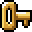

夢幻回廊
おはこんばんにちは、いらっしゃいませ。
どうぞゆっくりしていって下さい。
改造マリフラ
・
Super Mario Flash 3
・
Touhou Mario Flash 2
・
SMF2 Rain Edition
・
SMF2 Snow Edition
・
SMF2 Jungle Edition AA Skin
・
Super Luigi Flash 2 Ver.C
・
SMF2 Ultimate Edition Custom BGM
・
SMF2 Cryogenic Edition Custom BGM
・
SMF2 Neo Edition Custom BGM
・
SMF2 Desert Edition Custom BGM
・
SMF Enhanced Custom BGM
・
Yoshi's Island Flash High Resolution
・
Wario Land Flash High Resolution
・
Super Mario Bros. 3 Flash High Resolution
・
Donkey Kong Country Flash High Resolution
・
Super Mario Flash 2 Ver 1.0
改造マリフラ講座
・ はじめに
・ Step1.まずは画像を入れ替えてみよう
・ Step2.編集の基本を覚えよう
・ Step3.文章を書き換えてみよう
・ Step4.いろいろな値を書き換えてみよう
・ Step5.応用編
資料
・ ステージコードの見方
・ スーパーマリオフラッシュ バージョン一覧
リンク
・
スーパーマリオフラッシュ1･2 攻略&交流Wiki*
・
Data
・
Pouetpu-games.com
・
Level Palace
管理人: 火炉